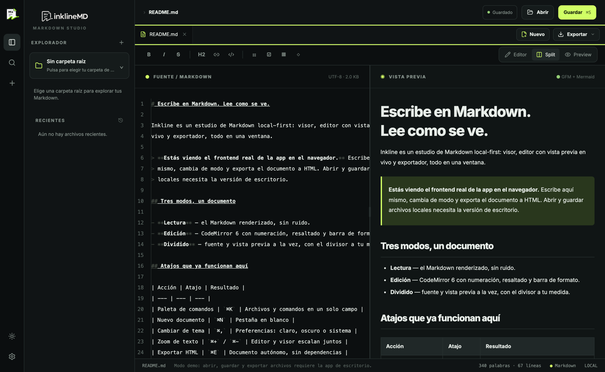

El editor que despeja el camino
Markdown.
Sin ruido.
Sin límites.
Inkline es un estudio de Markdown para el escritorio: visor, editor y exportador en una sola ventana. Tus archivos se quedan en tu equipo, y el documento se ve mientras lo escribes.
- Local-first
- Sin cuenta
- Sin telemetría
Demo interactiva de Inkline

Abrir la demoEs el frontend real de la app, sin backend de escritorio: abrir y guardar archivos requiere Inkline.
Funciones
Lo justo para escribir, y nada que estorbe
Tres modos, un espacio de trabajo y la salida a papel o a HTML cuando el documento está listo.
-
Tres modos, un documento
Lectura, edición y vista dividida con previsualización en vivo. El reparto del divisor se recuerda por documento.
-
Espacio de trabajo
Árbol de carpetas, recientes y pestañas. Cambiar de archivo no pierde ni el cursor ni la posición de lectura.
-
Paleta de comandos
Un campo para todo con
⌘K: saltar a un archivo, abrir uno reciente o ejecutar un comando. -
Editor CodeMirror 6
Numeración de líneas, resaltado de Markdown, barra de formato, ajuste de línea y tamaño de fuente a tu gusto.
-
Visor GitHub Flavored
Tablas, listas de tareas y bloques de código con resaltado de Shiki. La lectura tiene ancho de línea de verdad.
-
Diagramas Mermaid
Los bloques
mermaidse renderizan dentro del documento, sin abrir otra herramienta ni salir del archivo. -
Exportación
HTML autónomo, copia en Markdown y formatos de Office (
.docx,.odt). La impresión va por el navegador del sistema. -
Ajustes que persisten
Tema claro, oscuro o del sistema, tipografía serif opcional para leer y zoom global con
⌘+/⌘−. -
Local-first de verdad
Los archivos se escriben con write-then-rename y nunca salen de tu equipo: no hay cuenta ni servidor intermedio.
Bajo el capó
Un binario nativo, no una pestaña más
La interfaz es web; la ventana, el disco y los diálogos del sistema son nativos.
| Shell | Tauri 2 (Rust) |
|---|---|
| UI | React 18 + TypeScript |
| Build | Vite 6 |
| Estilos | Tailwind CSS 4 + shadcn/ui |
| Editor | CodeMirror 6 |
| Markdown | markdown-it (GFM) + Shiki + Mermaid |
Escritura atómica
Se escribe un temporal y se renombra: un corte de luz no deja el documento a medias.
Sin red por defecto
No hay sincronización ni telemetría. Lo que abres es tuyo y se queda donde está.
Una sola ventana
Visor, editor y exportador comparten el documento, la posición y el tema.
Descargas
Instaladores
Versión 0.2.0. Binarios sin firmar: el sistema pedirá confirmación la primera vez que los abras.
-
Descargar .dmg
macOS
Tu sistema -
Descargar .exe
Windows
Tu sistema -
Linux
Tu sistema
Los instaladores de la versión 0.2.0 se sirven desde el CDN del proyecto.
El código está en ipepio/inkline-md, publicado bajo Apache-2.0.
macOS Intel y Windows arm64 todavía no tienen binario publicado.
Linux: se distribuye como .deb (x86_64), que instala el paquete y usa el WebKit del sistema en Debian, Ubuntu y derivadas.
Office (.docx / .odt) usa textutil de macOS: en otros sistemas la exportación disponible es HTML y Markdown.
Antes de descargar
Preguntas cortas
- ¿Qué es la demo de arriba?
- El frontend real de la app compilado para el navegador. Escribe, cambia de modo y exporta HTML; abrir y guardar archivos locales necesita la versión de escritorio.
- ¿Dónde se guardan mis documentos?
- Donde tú decidas. Inkline solo lee y escribe los archivos que abres, con escritura atómica y sin copias en la nube.
- ¿Por qué el sistema avisa al abrir el instalador?
- Los binarios son de un proyecto independiente y no están firmados ni notarizados. Usa el flujo «abrir de todos modos» de macOS o «más información → ejecutar» en Windows.
- ¿Hay versión móvil o web?
- No. Inkline es una app de escritorio: necesita acceso al sistema de archivos. La demo del navegador es una muestra del frontend, no un producto aparte.
- ¿Cómo se compila?
- Con Node 22+, pnpm y Rust estable:
pnpm instally luegopnpm tauri dev. El build de escritorio se empaqueta conpnpm tauri build. - ¿Se puede usar el código?
- Sí: licencia Apache-2.0. El proyecto se llama inklineMD y la app, Inkline.